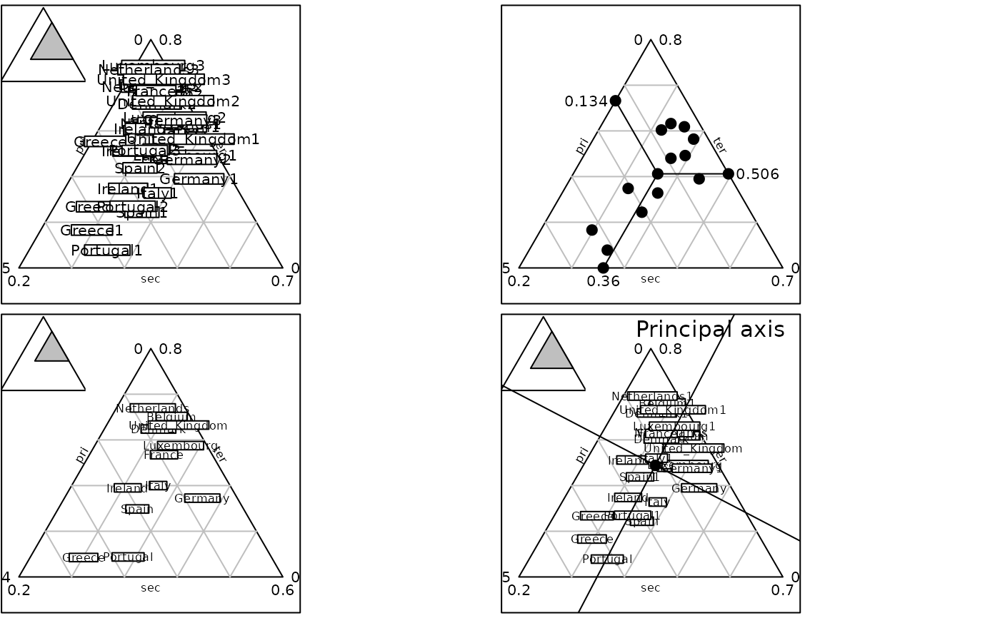

Ternary plot with labels
triangle.label.RdThis function represents a three dimensional scatter plot with labels.
Usage
triangle.label(dfxyz, labels = rownames(dfxyz), adjust = TRUE, min3d = NULL,
max3d = NULL, addaxes = FALSE, addmean = FALSE, meanpar = NULL, axespar = NULL,
showposition = TRUE, facets = NULL, plot = TRUE, storeData = TRUE, add = FALSE,
pos = -1, ...)Arguments
- dfxyz
a three columns data frame used to produce the plot
- labels
a character vector containing labels for points
- adjust
a logical to adjust the device with the limits of the smaller equilateral triangle containing the values
- min3d
a vector of three values for triangular minimal limits
- max3d
a vector of three values for triangular maximal limits
- addaxes
a logical to draw the principal axes
- addmean
a logical to plot the mean
- meanpar
a list to represent mean points using
pch,cexandcol- axespar
a list to represent axes lines using
col,lwdandlty- showposition
a logical indicating whether the used triangle should be shown in the complete one
- facets
a factor splitting the rows of
dfxyzso that subsets of the data are represented on different sub-graphics- plot
a logical indicating if the graphics is displayed
- storeData
a logical indicating if the data are stored in the returned object. If
FALSE, only the names of the data arguments are stored- add
a logical. If
TRUE, the graphic is superposed to the graphics already plotted in the current device- pos
an integer indicating the position of the environment where the data are stored, relative to the environment where the function is called. Useful only if
storeDataisFALSE- ...
additional graphical parameters (see
adegparandtrellis.par.get)
Value
An object of class ADEg (subclass Tr.label) or ADEgS (if showposition is TRUE,
if add is TRUE and/or if facets are used).
The result is displayed if plot is TRUE.
Author
Alice Julien-Laferriere, Aurelie Siberchicot aurelie.siberchicot@univ-lyon1.fr and Stephane Dray
Examples
data(euro123, package = "ade4")
df <- rbind.data.frame(euro123$in78, euro123$in86, euro123$in97)
row.names(df) <- paste(row.names(euro123$in78), rep(c(1, 2, 3), rep(12, 3)), sep = "")
g1 <- triangle.label(df, label = row.names(df), showposition = TRUE, plot = FALSE)
g2 <- triangle.label(euro123$in78, plabels.cex = 0, ppoints.cex = 2, addmean = TRUE,
show = FALSE, plot = FALSE)
g3 <- triangle.label(euro123$in86, labels = row.names(euro123$in78), plabels.cex = 0.8,
plot = FALSE)
g4 <- triangle.label(rbind.data.frame(euro123$in78, euro123$in86), plabels.cex = 0.8,
addaxes = TRUE, psub.te = "Principal axis", psub.cex = 1.5, psub.pos = "topright", plot = FALSE)
G <- ADEgS(c(g1, g2, g3, g4), layout = c(2, 2))
